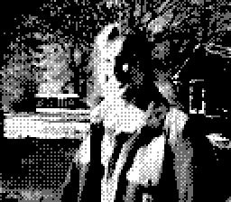

About Me
 Picture of me on the Game Boy camera (thanks Carson :)
I’m a PhD student in Cornell’s Center for Applied Mathematics, where I have the pleasure of being advised by Phil Sosoe. I’m interested in probability and its connections to analysis and physics. I spend most of my time staring at measures of the form dμ = e − V(ϕ)dϕ.
Prior to Cornell, I worked at the Johns Hopkins Applied Physics Lab from 2020-2023. I worked in autonomous navigation, uncertainty estimation for neural networks, and atmospheric science. My work was funded primarily by the CDAO and NASA.
Before that, I completed my undergraduate studies at Swarthmore College in Math and Physics in 2020.
Contact Me
Feel free to reach out via email (lp402 - at - cornell - dot - edu).
a CV
here (updated 2025-01-16).